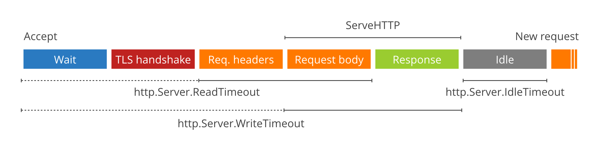

这是 Cloudflare 的 Filippo Valsorda 2016年发表在Gopher Academy的一篇文章， 虽然过去两年了，但是依然很有意义。
先前 crypto/tls 太慢而net/http也很年轻， 所以对于Go web server来说， 通常我们明智的做法把它放在反向代理的后面， 如nginx等，现在不需要了。
在Cloudflare我们最近试验了直接暴漏纯Go的服务作为主机。 Go 1.8的net/http 和 crypto/tls 提供了稳定的、高性能并且灵活的功能。
然后，需要做一些调优的工作，本文我们将展示怎么去调优和使web服务器更稳定。
crypto/tls
2016年了，你不会再运行一个不加密的HTTP Server，所以你需要crypto/tls。好消息使这个库已经非常快了(我们的测试)，目前他的安全攻击追踪也很优秀。
缺省配置是使用Mozilla参考中的中级推荐配置,但是 你仍然应该设置PreferServerCipherSuites以确保采用更快更安全的密码库, CurvePreferences避免未优化的曲线。 客户端如果使用CurveP384算法回导致我们的机器多达1秒的cpu消耗。
|
|
如果你想配置兼容性， 你可以设置MinVersion和CipherSuites。
|
|
注意Go的CBC加密套件的实现（上面我们禁用了）很容易收到 Lucky13攻击， 即使Go 1.8实现了部分的处理。
最后需要注意的是， 所有这些建议仅适用 amd64架构因为它可以实现快速的常数级的加密原语(AES-GCM, ChaCha20-Poly1305, P256), 其它架构可能不适合产品级应用。
既然是服务要暴漏带互联网上， 它需要一个公开的可信的证书。通过Let’s Encrypt很容易申请， 可以使用golang.org/x/crypto/acme/autocert的GetCertificate函数。
不要忘了将HTTP重定向到HTTPS, 如果你的客户端是浏览器的话，可以考虑 HSTS。
|
|
你可以使用SSL Labs test检查配置是否正确。
net/http
net/http 包含 HTTP/1.1 和 HTTP/2。你一定已经熟悉了Handler的开发，所以本文不讨论它。我们讨论服务器端背后的一些场景。
Timeout
超时可能是最容易忽略的危险的场景。你的服务可能在受控网络中幸免于难，但是在互联网上就不会那么幸运了， 特别是(不仅仅)受到恶意攻击。
有一系列的资源需要超时控制。尽管goroutine消耗很少，但文件描述符总是有限的。卡住的连接、不工作的连接甚至恶意断掉的连接不应该消耗它们。
一个超过最大文件符的服务器总是不能接受新的连接， 会报下面的失败:
|
|
一个缺省的 http.Server, 、就像包文档中的例子http.ListenAndServe 和 http.ListenAndServeTLS， 没有设置任何超时控制, 你肯定不是你想要的。

在http.Server有三个参数控制timeout: ReadTimeout, WriteTimeout 和 IdleTimeout,你可以显示地设置它们:
|
|
ReadTimeout的时间范围起自连接备接受，止于请求的body完全读出。在net/http的实现中它在连接Accept后通过SetReadDeadline设置。
ReadTimeout最大的问题它不允许服务器给客户端更多的时间去请求的body stream。 go 1.8新引入了一个参数ReadHeaderTimeout，它止于读完请求头。然后一直有一些不清楚的方式去设置读超时，相关的设计讨论可以参考#16100。
WriteTimeout超时正常起自读完请求头， 止于response写完(也就是ServeHTTP的生命周期)， 通过readRequest的结尾处的SetWriteDeadline设置。
然后，当通过HTTPS连接时，SetWriteDeadline在Accept后立即设置， 所以它也包含TLS握手的packet的写。讨厌的是，这意味着WriteTimeout包含http头的读以及第一个字节的等待。
ReadTimeout和WriteTimeout是绝对值，无法在Handler中更改它(#16100)。
Go 1.8还新引入了IdleTimeout参数， 用来限制服务端Keep-Alive连接在重用前idle的数量。
Go 1.8之前的版本， ReadTimeout在请求完成后又立即开始滴答(tick)，这对Keep-Alive连接是不合适的: idle time会消耗客户端允许发送请求的时间，导致一些快的客户端会有不期望的超时。
对于不可信的客户端和网络，你应该设置Read, Write 和 Idle超时， 这样一个读或者写很慢的客户端不会长时间占用一个连接。
对于go 1.8之前的 HTTP/1.1超时的背景知识， 你可以参考Cloudflare的博客。
HTTP/2
HTTP/2在 Go 1.6+中回自动启用， 只要它满足下面的条件：
- 请求通过
TLS/HTTPS Server.TLSNextProto为nil (如果设置一个空的map，则禁止HTTP/2)Server.TLSConfig已被设置，ListenAndServeTLS被调用或者下一条Serve被调用，并且tls.Config.NextProtos包含h2(比如[]string{"h2", "http/1.1")
HTTP/2 和 HTTP/1.1有些不同，因为同一个连接同时会服务多个请求，但是Go抽象了统一的超时控制接口。
遗憾的是, Go 1.7中的ReadTimeout会打断 HTTP/2 连接，它不会为每一个连接重置，而是在连接初次建立时就设置而不会重置，当超时后就会断掉 HTTP/2连接。 Go 1.8 修复了这个问题。
基于此和ReadTimeout的idle time问题，我强烈建议你尽快升级到1.8。
TCP Keep-Alives
如果你使用ListenAndServe(与传入net.Listener给Serve不同，这个方法使用缺省值提供了零保护措施)， 3分钟的TCP Keep-Alive会自动设置,它会让彻底消失的client有机会放弃连接， 我的经验是不要完全相信它， 无论如何也要设置超时。
首先， 3分钟太长了，你可以使用你自己的tcpKeepAliveListener调整它。、
更重要的是，Keep-Alive只是保证client还活着，但不会设置连接存活的上限。恶意攻击的客户端会打开非常多的连接，导致你的服务器打开很多文件描述符， 通过未完成的请求， 会导致你的服务拒绝服务。
最后，我的经验是连接往往会导致泄漏，知道超时起作用。
ServeMux
包级别的http.Handle[Func] (和你的web框架)注册handler到全局的http.DefaultServeMux， 如果Server.Handler是nil的话， 你应该避免这样做。
任何你输入的包，不管是直接的还是间接的，都可以访问http.DefaultServeMux，可能会注册你不期望的route。
例如，包依赖中有任何一个库导入了net/http/pprof,客户端都能得到你的应用的CPU的profile。 你可以使用net/http/pprof手工注册。
正确的是， 初始化你自己的http.ServeMux,把handler注册到它的上面， 设置它为Server.Handler, 或者设置你自己的web框架为Server.Handler。
Logging
net/http在调用你的handler之前做了大量的工作， 比如接受连接https://github.com/golang/go/blob/1106512db54fc2736c7a9a67dd553fc9e1fca742/src/net/http/server.go#L2631-L2653， TLS握手等等……
当任何一个步骤出错，它会写一行日志到Server.ErrorLog。其中一些错误， 比如超时和连接重置， 在互联网上是正常的。你可以连接大部分错误并把它们加入到metric中，这要归功于这个保证：
Each logging operation makes a single call to the Writer’s Write method.
如果在handler中你不想输出堆栈log, 你可以使用panic(nil)或者使用Go 1.8的panic(http.ErrAbortHandler)。
Metrics
metric可以帮助你监控打开的文件描述符。Prometheus使用proc文件系统来帮助你完成这些。
如果你需要调研泄漏问题， 你可以使用Server.ConnState钩子来得到更多的连接的细节metric。注意，不保持state就没有方式能保持一个正确的StateActive数量，所以你需要维护一个map[net.Conn]ConnState。
结论
使用Nginx做Go服务前端的日志一去不复返了， 但是面对互联网你仍然需要做一些额外的防护措施， 可能需要升级到新的Go 1.8版本。